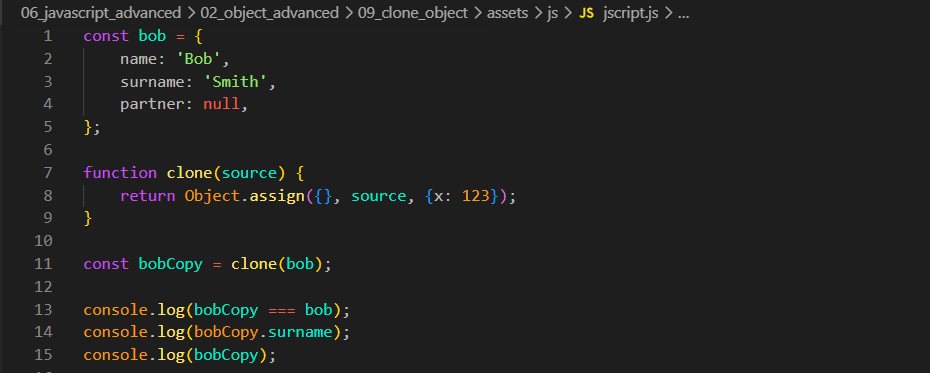
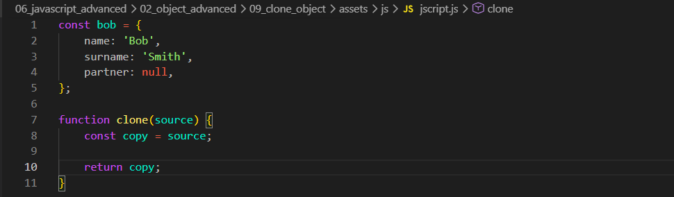
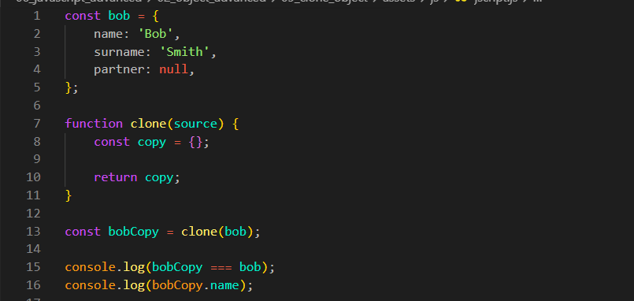
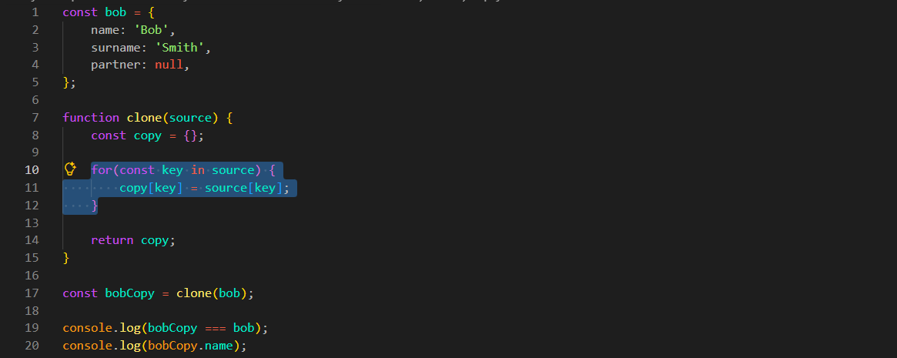
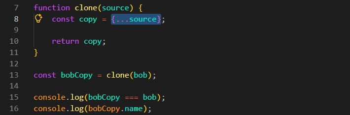
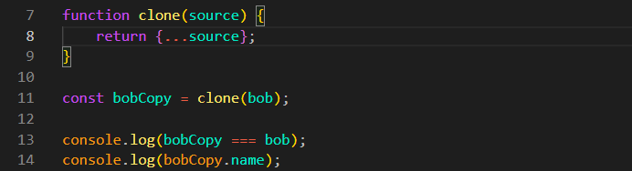
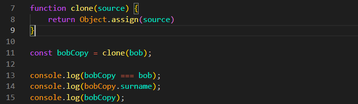
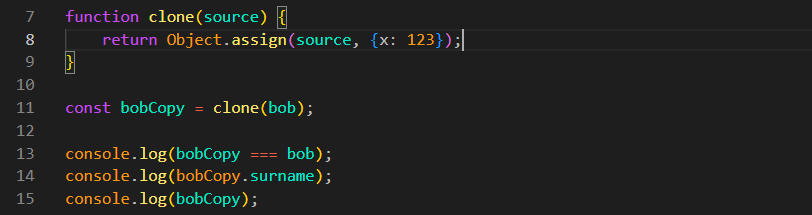
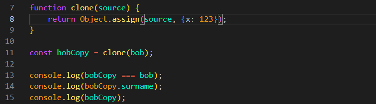

Clone Object
Intro
Agora iremos ver como podemos estar clonando objetos. Como criar um novo objeto com as mesmas propriedades do anterior mas novo.
Agora iremos ver como podemos estar clonando objetos. Como criar um novo objeto com as mesmas propriedades do anterior mas novo.
JS:

Primeiro comecamos criando uma funcao iremos chama-la de clone.

Ao fazermos dessa forma nada ira mudar, pois copy é uma referencia de um objeto passado, estaremos apenas retornando a mesma referencia.
Ao inves de fazer uma atribuicao, precisamos criar um novo objeto, podemos fazer isso utilizando chaves {}.
Porem isso nos rotornara um false precisamos que o novo objeto nos retorne as mesmas propriedades se fizermos por exemplo da seguinte forma:

Podemos observar que em nosso DevTools nosso bobCopy.name nos retorna undefined. Isso pois dentro é apenas um objeto vazio.
Para podermos fazer isso, podemos estar utilizando um loop, iremos usar o for:

Agora podemos observar que todas as propriedades foram copiadas. Com isso foi criado um funcao que copia completamente nosso objeto.
Porem ela é um pouco volumosa e essa iteracao percorre nao apenas as chaves proprias do objeto mas tambem as herdadas, fazendo a nao ser muito confiavel.
Com esse operador conseguimos a mesma coisa de uma maneira menos volumosa e mais segura. Com isso teremos dois objetos diferentes porem suas propriedades serao as mesmas:

Se quisermos podemos encurtar ainda mais da seguinte forma:

Serve para espalhar os elementos de um array ou as propriedades de um objeto.
Principais usos:
Resumo: O Spread Operator (...) espalha os valores de um array ou objeto para facilitar cópias, junções e o envio de argumentos para funções.
O Object.assign() é um método usado para copiar ou juntar propriedades de objetos.
Ele copia as propriedades de um ou mais objetos para um objeto de destino.
Para copiar um objeto, passamos um objeto vazio como destino: Object.assign({}, source).

Dessa forma, é criada uma cópia do objeto.
Também podemos adicionar novas propriedades durante a cópia: Object.assign({}, source, { x: 123 }).

Se o objeto de destino já existir, suas propriedades serão atualizadas com os valores dos objetos passados em seguida.
Tambem podemos modificar o objeto original da seguinte forma: Object.assign(source, { x: 123 }) → atribui a propriedade x ao objeto source (modifica o original).

Copiar um objeto:
Object.assign({}, source);
Juntar (copiar) varios objetos em um so:
Object.assign({}, obj1, obj2, obj3);
Modificar um objeto existente, adicionando ou atualizando propriedades:
Object.assign({}, obj1, obj2, obj3);
spread (...):
Object.assign():
Regra prática: se for criar uma cópia ou juntar objetos, prefira Spread (...). Se encontrar Object.assign(), saiba que ele faz praticamente a mesma coisa, mas só para objetos.